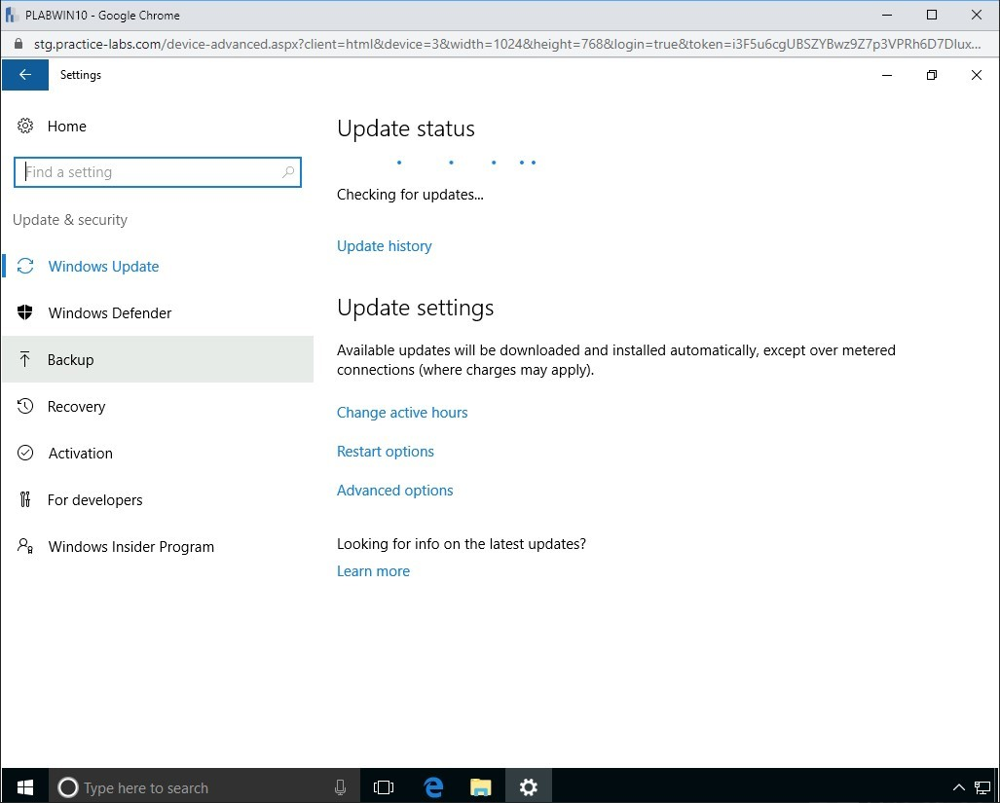
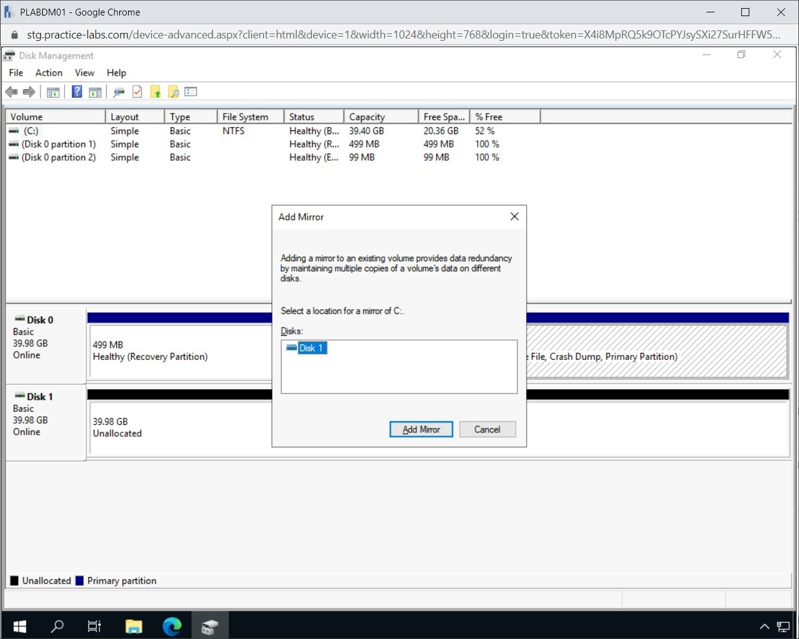
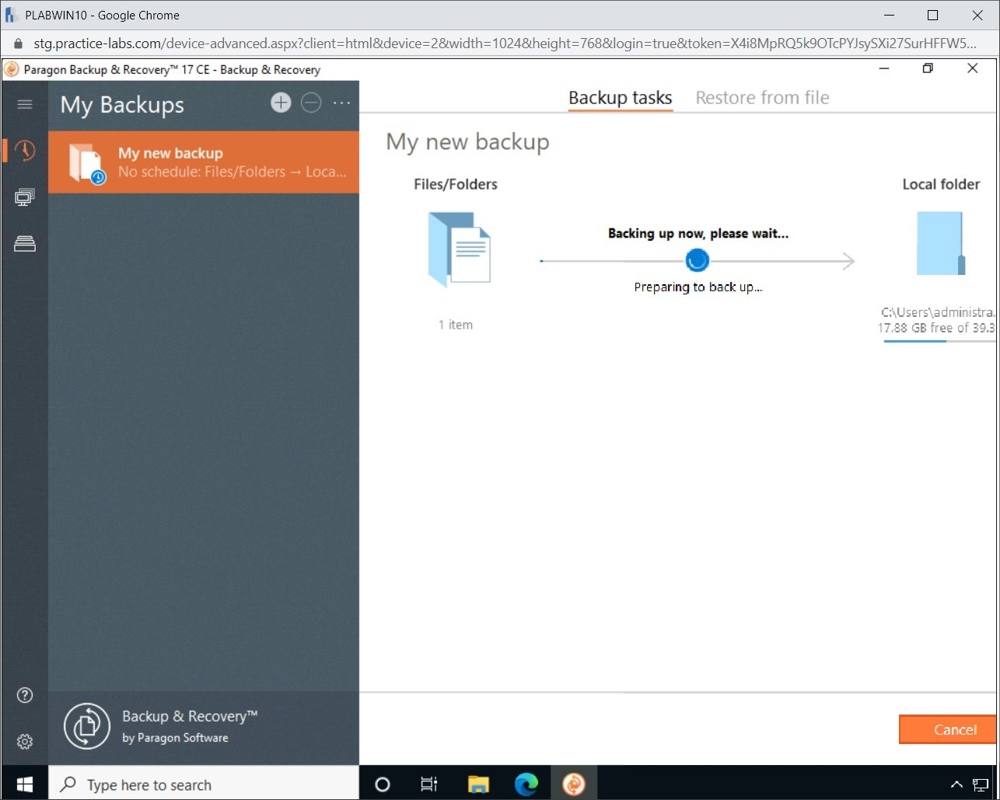
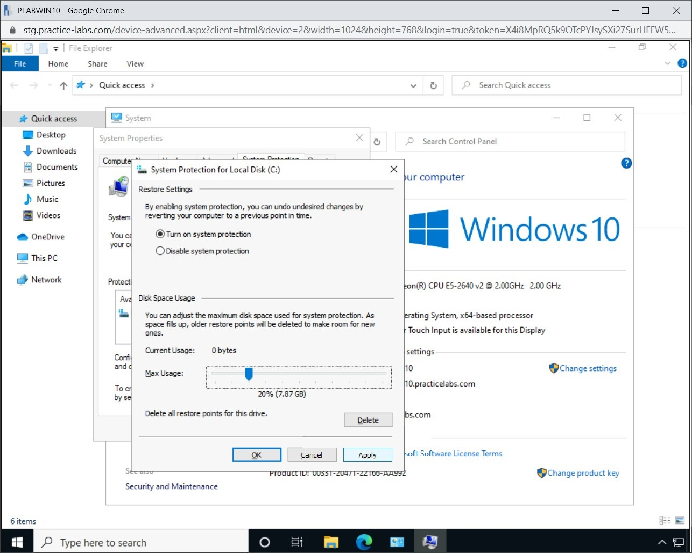

Introduction
bb1840e4-5425-49a3-9d75-477b8f016ff8
Welcome to the Cybersecurity Backup & Restore Strategies Practice Lab. In this module, you will be provided with the instructions and devices needed to develop your hands-on skills.
dc640c20-9434-45ea-b7c2-6d4d6a196bfc
Learning Outcomes
In this module, you will complete the following exercises:
- Exercise 1 - Redundancy
- Exercise 2 - Replication
- Exercise 3 - Backup Types
- Exercise 4 - Create a System Image Backup
- Exercise 5 - Non-Persistence and Resilience
After completing this module, you should be able to:
- Use Cloud Storage for Backup
- Establish an Automated Backup
- Initialize and Create a New Simple Volume
- Perform a Full Backup in Windows
- Perform an Incremental Backup in Windows
- Restore Backed Up Data
- Configure System Protection Settings
After completing this module, you should have further knowledge of:
- Redundancy
- Storage Area Network (SAN)
- Virtual Machines (VMs)
- On-premises vs. Cloud
- Types of Data Backup
- Backup Methods
- Restoration Order
- Last Known Good Configuration
- Live Boot Media
- High Availability
- Scalability
- Diversity
Exam Objectives
The following exam objectives are covered in this lab:
2.5 Given a scenario, implement cybersecurity resilience.
- Redundancy
- Replication
- On-premise vs. Cloud
- Backup Types
- Non-persistence
- High Availability
- Restoration Order
- Diversity
Note: Our main
focus is to cover the practical, hands-on aspects of the exam
objectives. We recommend referring to course material or a search engine
to research theoretical topics in more detail.
Lab Duration
It will take approximately 1 hour to complete this lab.
c6fa62a3-1a00-4052-8104-258e8cbaa187
Help and Support
For more information on using Practice Labs, please see our Help and Support page. You can also raise a technical support ticket from this page.
Click Next to view the Lab topology used in this module.
d2c53300-f951-45a9-9aa4-3d4ecae69e11
Lab Topology
During your session, you will have access to the following lab configuration.

Depending on the exercises, you may or may not use all
of the devices, but they are shown here in the layout to get an overall
understanding of the topology of the lab.
- PLABDC01 - (Windows Server 2019 - Domain Controller)
- PLABDM01 - (Windows Server 2019 - Domain Member)
- PLABWIN10 - (Windows 10 - Domain Member Workstation)
- PLABKALI - (Kali Linux 2019.4 - Standalone Server)
Click Next to proceed to the first exercise.
<
Home |
README >
CompTIA Security+ Practice Labs
Exercise 1 - Redundancy
In simple terms, redundancy is a method of duplicating
a piece of data or server or any component to ensure that the
duplicated one is available to serve the purpose if the primary one
fails. For example, you make a redundant copy of the data folder in
online storage, which synchronizes from the source folder in real-time.
If the source folder is deleted or the system crashes, you can recover
the entire folder on another system from the online storage. You always
implement redundancy to avoid a single point of failure.
In this exercise, you will learn about redundancy and its related terms.
Learning Outcomes
After completing this exercise, you should have further knowledge of:
Your Devices
This exercise contains supporting materials for Security+.

Redundancy
Redundancy can be added at multiple levels, not just
the data. For example, within a server, you can have two hard drives
where the files and folders of one hard drive are mirrored to the other.
The contents of the second hard drive are overwritten. You can add
redundant network interface cards (NICs) or power supplies. You can
configure redundant servers in a failover cluster and you can even put
up a redundant site, which can be a hot, cold or warm site.
Geographic Dispersal
With the invention of cloud computing, it is easy to
geographically disperse your data. You can keep one copy on your system,
and another copy can be replicated to the cloud, which in turn, will
have replicated that copy of the data for redundancy. When you save a
piece of data to the cloud, it is automatically replicated to different
geographical locations to ensure that if there is an incident with one
geographical location, let’s say floods; the data is still intact in
another geographical location.
An alternate method to cloud is to put up your servers
in different geographical locations and replicate data. However, it is a
costly affair, but the choice of which method to use remains with the
organization. For example, a financial institution will spend the money
to put up their servers to ensure data privacy and confidentiality. It
would not replicate their data to the cloud.
Disk
Each server within an organization would hold some
kind of data or another. To be able to safeguard the data, you need to
ensure that there is some level of redundancy build. You can implement a
Redundant Array of Independent Drives (RAID) to enable redundancy with
the hard disks. You must use an operating system that can carry out a
RAID and choose either software or hardware RAID to implement. In order
to implement a hardware RAID, you need a RAID controller. An example of
an operating system that provides the capabilities to carry out a RAID
is Windows Server 2019.
There are different levels of RAID that can be
enforced. Before executing a specific RAID level, you need to ensure
that it meets the business’s objective. For example, if you need fault
tolerance, then RAID 0 should not be implemented. Let’s look at the RAID
levels for better comprehension.
RAID 0: Known as disk striping. It requires two
disks. The data is written in stripes on each of the disks. RAID 0 is
mostly used when you need high performance when dealing with heavy read
operations. However, it is important to note that if one of the two
disks fails, the data is lost.
RAID 1: Known as disk mirroring. It also
requires two disks. One disk is mirrored to another disk, and you only
get one disk's capacity as the other disk is redundant. It provides high
read performance. However, RAID 1 should not be used when you need high
write performance.
RAID 5: Known as disk striping with parity. To
build RAID 5, you need to have at least three disks. It provides high
read performance. However, RAID 5 should not be used when you need high
write performance. You also lose 1/3 of the disk storage in total as it
is used for parity, which is the extra information stored for recovering
a failed disk in RAID. For example, if each hard disk is 100 GB. Then,
instead of getting 300 GB, you only get 200 GB. The 100 GB is used for
parity.
RAID 6: Known as disk striping with double
parity. It works similarly to RAID 5. However, instead of three hard
disks, it requires a minimum of four hard disks. It can continue to work
even if two hard disks fail. Even though it is good for excellent read
operations, it should not be used when there are heavy write operations.
It works slower than RAID 5 because RIAD 6 has to write another block
of parity information.
RAID 10: Known as disk striping, mirroring, and
RAID 1+0. It requires a minimum of four hard disks. When you are
looking for excellent write performance and fault tolerance, RAID 10 is
the one you should implement. For example, RAID 10 is a perfect fit for
database servers that have high write operations. One of the drawbacks
is that you lose half of the total disk space. For example, if there are
four disks, and each disk is 100 GB, you would lose 200 GB because this
is mirrored to the remaining 200 GB.
Multipathing
Other than RAID, you can also use multipathing. With
the implementation of multipathing, you need to create several paths
from a system to the storage where you need to replicate the data. In
the server, you would need several NICs so that the data can go out of
the server through them. You would also need to ensure that several
paths are available for the data to reach its storage on the network.
You need redundant switches, cables, routers, and ports to implement
multipathing.
Network
There are different methods to build network
redundancy. To start with, you can have redundant NICs or network
interface adapters in a server. If one NIC fails, then the redundant one
can continue to function. You can also have redundant routers,
switches, and even firewalls on the network.
You can also have load balancers that help you to
distribute loads to the servers. This helps the servers to provide
optimum performance as one server is not overloaded. The load balancers,
which are configured on the network, become the front-end for the
servers and pass on the requests to the servers depending on the
configuration.
Power
Power is the most critical requirement when you need
to ensure your data center works. Without power, you cannot run any
network device or even servers. Therefore, other than the main power,
you also need to have redundant power, which can be achieved by having
redundant power supplies within the servers and other network devices.
The redundant power supplies should be connected with
an uninterruptible power supply (UPS), which continues to provide power
to the server or device in the event that the main power fails. A UPS
can either be online or offline. The offline UPS activates when there is
no main power supply. The online UPS continues to run along with the
main power supply.
In some cases, the generators can also be used.
Several large organizations run silent generators that power on as and
when the main power supply is interrupted.
Other than the generators, the managed power
distribution units (PDUs) are commonly used in data centers. They are
meant to take three or more phase inputs and then distribute the power
through the one-phase output. They are designed to distribute power to
the rack-mounted servers and network devices.
7429868b-128c-4069-95a9-7246a6a9e5a3
<
Home |
README >
CompTIA Security+ Practice Labs
Exercise 2 - Replication
Replication is a method of creating a replica or copy
of original data. This can be done on the same server, another server
in the same premises, or even another server in a different location.
Replication is not only done between servers, it can also be done
between a server and storage solutions, such as Network Attached Storage
(NAS) or Storage Area Network (SAN). Several other methods can be used
for replication.
Replication can be synchronous or asynchronous. When
referring to synchronous replication, it creates a copy or replica of
data in real-time. When referring to asynchronous replication, it is
triggered only at a defined schedule.
In replication, you are essentially creating a copy
of the data to ensure that you can retrieve the replicated copy if the
source data is lost or corrupt. In this exercise, you will learn about
replication on SAN and virtual machines (VMs).
Learning Outcomes
After completing this exercise, you should have further knowledge of:
- Storage Area Network (SAN)
- Virtual Machines (VMs)
- On-premises vs. Cloud
Your Devices
This exercise contains supporting materials for Security+.

Storage Area Network (SAN)
SAN is one of the primary methods of data backup.
However, with SANs, it is easier to perform replication from one
location to another location, which can be offsite. The replication is
extremely fast as compared to other backup and replication methods.
You can either perform the SAN-to-SAN replication.
This method quickly pushes a large amount of data as a replica on the
secondary SAN, which can be deployed on an offsite location. On the
other hand, you can use SAN snapshots, which replicates only the
point-in-time data to another SAN, otherwise known as asynchronous
replication.
Virtual Machines (VMs)
Virtual machines or VMs work just like any normal
system or server, with the exception that they do not have any hardware.
They run on a server and use its virtual hardware to run. Virtual
machines running business-critical applications or hosting critical data
also need to be safeguarded from failures. Replication is the method
that can be used to ensure if the running VM fails, the replicated VM
can be restored and back online in a matter of minutes.
VM replication can be of two types. The first type is
real-time replication. When the data is being written to the VM, the
entire VM is being replicated to another location or server. This type
of replication provides the exact copy of the VM. The second type is the
point-in-time replication, which is scheduled at a specific time. This
type of replication only provides the replica, if required to restore,
from the time when it was replicated.
On-premises vs. Cloud
Data replication can either be done on-premise or in
the cloud. For example, you can replicate all your data to SAN, which is
located on-premise. The SAN can then replicate the information to
another SAN, which is located in another premise or location.
The data can also be replicated to the cloud.
Microsoft OneDrive or DropBox are two examples that can use their
desktop utilities to replicate the data to the cloud. The benefit is
that the data is always available. It can be accessed from anywhere and
at any given point in time. This is not an advantage with the on-premise
replication, as you may have to be physically available to retrieve the
replicated data.
7429868b-128c-4069-95a9-7246a6a9e5a3
<
Home |
README >
CompTIA Security+ Practice Labs
Exercise 3 - Backup Types
There are different types of backups that you can
perform. You can back up data on the same local system, an external
drive, another networked server, or even the cloud. Each backup type has
its pros and cons. For example, for cloud backup, you need an Internet
connection. However, the biggest advantage is that you can connect from
anywhere globally and retrieve data or synchronize new files with the
existing backup as long as you have an Internet connection.
In this exercise, you will learn to use Microsoft
OneDrive for backing up files in the cloud. You will also learn to
establish an automated backup.
Learning Outcomes
After completing this exercise, you should have further knowledge of:
After completing this exercise, you should be able to:
- Use Cloud Storage for Backup
- Establish an Automated Backup
Your Devices
You will be using the following devices in this lab. Please power these on now.
- PLABDC01 - (Windows Server 2019 - Domain Controller)
- PLABWIN10 - (Windows 10 - Domain Member Workstation)

Types of Data Backup
To prevent data loss, you can back up your data.
Backing up data means that you are making a redundant copy of the data.
It could be on a DVD, USB drive, or a cloud drive.
For example, you may suffer data loss by accidentally
deleting files. However, if you have the latest copy backed up on a
cloud drive, you could restore the files.
When you backup your important data on a USB drive,
DVD, network location, or in a cloud drive, you need to ensure that you
do not end up backing up each file on your system. This is because you
would exhaust the space on the backup drive. You should backup only the
files that are important and of use to you. For example, you would
probably not want to backup an application installer that is readily
available on the Internet.
There are a few types of data backup:
Full backup
As the name indicates, a full backup backs up all the
files or folders you selected. You can also create a full backup of an
entire drive. A full backup takes a longer time to complete as each file
and folder is backed up. It is also important to note that a full
backup is faster to restore as you are restoring from a single copy of
the backup.
Summary of features of a full backup:
- Data backup: Complete or all data
- Backup speed: Slowest
- Restore speed: Fast
- Storage space: High
Incremental backup
An incremental backup is done after a full backup has
been taken. It backs up the files and folders that are either new or
modified since the last backup, which could be any type of backup. For
example, let’s assume that you have taken a full backup on Monday. On
Tuesday, you run the incremental backup. It will only backup files that
have changed since Monday. If you run another incremental backup on
Wednesday, it will backup only the files that have changed since
Tuesday.
Summary of features of an incremental backup:
- Data backup: Only new or modified files and folders
- Backup speed: Fast
- Restore speed: Moderate
- Storage space: Lowest
Differential backup
A differential backup is done after a full backup has
been taken. It backs up the files and folders that are either new or
modified since the last full backup. For example, let’s assume that you
have taken a full backup on Monday. On Tuesday, you run the differential
backup. It will only backup files that have been changed or created
since Monday. If you run another differential backup on Wednesday, it
will backup all files that have changed or created since Monday.
Summary of features of a differential backup:
- Data backup: All data since last full backup
- Backup speed: Moderate
- Restore speed: Fast
- Storage space: Moderate
Task 2 - Use Cloud Storage for Backup
Microsoft OneDrive is a built-in utility in Windows
10. If you have a Hotmail or Outlook account, you can use this utility
to back up your data in the OneDrive storage. When you use this utility,
you can configure it to keep a copy of the data on your local system
and also one copy on OneDrive. As you make changes to the local data,
the changes are replicated to OneDrive instantly if your Internet
connection is on.
Note: It is
important to note that Microsoft continues to make changes to the
OneDrive wizard. Therefore, you may see a slight variation in the steps
that are being performed in this lab.
In this task, you will learn to use OneDrive as cloud storage for backup.
Alert: In this task, you
will need to use your own Hotmail.com or Outlook.com E-mail. If you do
not have one, you can set up one and complete this task with your
account. Alternatively, you can use this task as a demonstration only.
Step 1
Ensure you have turned on all the required devices. Connect to PLABWIN10. In the Type here to search text box, type the following:
Onedrive
Select OneDrive from the search result.
Figure 3.1 Screenshot of PLABWIN10: Onedrive is typed into the search bar, and OneDrive is selected from the search results.
Step 2
The Microsoft OneDrive wizard is displayed. On the Set up OneDrive page, type the E-mail account in the text box, and click Sign in.
Figure 3.2 Screenshot of PLABWIN10: Showing the E-mail address entered in the Microsoft OneDrive wizard Set up Onedrive page.
Step 3
In the Enter password text box, type the password and click Sign in.
Figure 3.3 Screenshot of PLABWIN10: Showing the password entered in the Microsoft OneDrive wizard.
Step 4
On the Your OneDrive folder page, keep the default path and click Next.
Figure
3.4 Screenshot of PLABWIN10: Showing Your OneDrive folder page with the
default file path for the Onedrive folder. The Next button is selected.
Step 5
You may be shown an ad page during the OneDrive setup. Click Not now.
Figure
3.5 Screenshot of PLABWIN10: Showing an advert for Microsoft 365
Personal in the Onedrive wizard. The Not now button is selected.
Step 6
On the Get to know your OneDrive page, click Next.
Figure 3.6 Screenshot of PLABWIN10: Showing the Get to know your OneDrive page with the Next button selected.
Step 7
On the Share files and folders page, click Next.
Figure 3.7 Screenshot of PLABWIN10: Clicking Next on the Share files and folder page.
Step 8
On the All your files, ready and on-demand page, click Next.
Figure 3.8 Screenshot of PLABWIN10: Clicking Next on the All your files, ready and on-demand page.
Step 9
On the Get the mobile app page, click Later.
 Figure 3.9 Screenshot of PLABWIN10: Clicking Later on the Get the mobile app page.
Figure 3.9 Screenshot of PLABWIN10: Clicking Later on the Get the mobile app page.
Step 10
On the Your OneDrive is ready for you page, click Open my OneDrive folder.
Figure 3.10 Screenshot of PLABWIN10: Clicking Open my OneDrive folder on the Your OneDrive is ready for you page.
Step 11
The File Explorer opens automatically, displaying the OneDrive folder. Click X to close the File Explorer window.
![Figure 3.11 Screenshot of PLABWIN10: Showing the OneDrive folder in File Explorer with the [X] close button selected.](CybersecurityBackupandRestoreStrategies_files/image-m16-c-14.jpg) Figure 3.11 Screenshot of PLABWIN10: Showing the OneDrive folder in File Explorer with the [X] close button selected.
Figure 3.11 Screenshot of PLABWIN10: Showing the OneDrive folder in File Explorer with the [X] close button selected.
Step 12
In the system tray, click the up arrow and notice
that a cloud icon appears. Keep your mouse cursor over this icon for a
few seconds. A notification appears that it is up to date.
Figure
3.12 Screenshot of PLABWIN10: Showing the Microsoft OneDrive icon in
the system tray with a notification stating ‘OneDrive Up to date’.
Step 13
Right-click on this icon and select Settings.
Figure
3.13 Screenshot of PLABWIN10: Showing the OneDrive icon in the system
tray has been right-clicked and Settings has been selected in the
context menu.
Step 14
The Microsoft OneDrive dialog box is displayed. Ensure that you are on the Account tab.
Click Choose folders.
Figure
3.14 Screenshot of PLABWIN10: Showing the Microsoft OneDrive dialog box
with the Account tab active and the Choose folders button highlighted.
Step 15
Notice that folders that were listed in File Explorer are displayed.
Figure
3.15 Screenshot of PLABWIN10: Showing the Sync your OneDrive files to
this PC page with the Sync all files and folders in OneDrive checkbox
ticked, and the list of files and folders; Files not in a folder,
Documents and Pictures. Ok is selected.
Step 16
Open File Explorer. In the left pane, notice that the OneDrive node
has appeared. Select this node. The right pane displays the files and
folders that have been synchronized. When you select a folder to
synchronize, it will appear here.
Figure 3.16 Screenshot of PLABWIN10: Showing the synchronized folders under the OneDrive node in File Explorer.
Step 17
In the right pane, right-click to select New and then select Folder.
Figure
3.17 Screenshot of PLABWIN10: Showing the OneDrive folder in File
Explorer. The Right-click context menu is shown with New>Folder
selected.
Step 18
Name the folder as PLAB.
Close File Explorer and the Microsoft OneDrive dialog boxes.
Figure
3.18 Screenshot of PLABWIN10: The newly created folder is shown as PLAB
in the OneDrive. The [X] Close button of File Explorer is selected.
Step 19
In the system tray, click the up arrow, right-click the Microsoft OneDrive icon and then select View online.
Figure 3.19 Screenshot of PLABWIN10: Showing the right-click context menu for OneDrive with the option View online selected.
Step 20
When prompted to choose the language, click Stay in: United States - English.
Figure
3.20 Screenshot of PLABWIN10: Showing a dialog box prompting to change
the language. Stay In: United States - English is selected.
Step 21
The Microsoft Edge window will be displayed with the Microsoft OneDrive page loaded. Click Sign in to your account.
Use the credentials that you had used with the Microsoft OneDrive utility.
After signing in, if prompted with a notification to save the password, click No.
Figure 3.21 Screenshot of PLABWIN10: Showing the Microsoft OneDrive Sign in Webpage.
Step 22
When prompted to stay signed in, click No.
Note: If prompted, choose not to save the password.
Figure 3.22 Screenshot of PLABWIN10: Showing the Stay signed in? Microsoft dialog box. The No button is highlighted.
Step 23
On the OneDrive window, notice that your files are already synchronized.
Figure 3.23 Screenshot of PLABWIN10: Displaying the synchronized files on the OneDrive account.
Task 3 - Establish an Automated Backup
Asking a user to manually launch a backup when they
have the time and remembers to do so would be error-prone and
unreliable. To make sure that regular backups are taken, Windows
provides an automated backup tool.
In this task, you will learn to establish an automated backup.
Step 1
Ensure that you have powered on the required devices. Connect to PLABWIN10.
Type Settings in the Type here to search textbox and click on the Settings app.
Figure
3.24 Screenshot of PLABWIN10: Showing settings typed in the Type here
to search text box. Settings is selected from the search results.
Step 2
On the Windows Settings page, click the Update & Security option.
Figure 3.25 Screenshot of PLABWIN10: Clicking the Update & Security link on the Windows Settings page.
Step 3
In the left pane, click Backup.
Figure 3.26 Screenshot of PLABWIN10: Showing the Windows Settings page. The Backup menu option in the left pane is selected.
Step 4
In the middle of the screen, under Looking for an older backup, find and click on the Go to Backup and Restore link.
Note: You are
not actually looking for an older backup from Windows 7. This just
happens to be how the menu options are spelled out in Windows for this
backup service. The backup service was available with Windows 7.
Figure
3.27 Screenshot of PLABWIN10: Showing the Windows Settings page. The Go
To Backup and Restore (Windows 7) link is selected.
Step 5
Under the Backup heading, click the Set up backup option on the right.
Figure
3.28 Screenshot of PLABWIN10: Showing the Back up or restore your files
page on the Backup and Restore (Windows 7) window.
Step 6
After a short delay, the Set up backup window appears. Click the Save on a network button.
Figure 3.29 Screenshot of PLABWIN10: Showing the Set up backup dialog box. The Save on a network… button is selected.
Step 7
In the Select a network location field, type in:
\\PLABDC01\IT\
In the Username field, type the following:
practicelabs\administrator
In the Password field type:
Passw0rd
Click OK.
Alert: Here, you will be
saving the backups to the domain controller server for convenience.
However, in a large network, you would likely have a dedicated storage
device set aside for backups. The device would be used for backups
across the network. Another option would be an external drive dedicated
to this single machine. But you would not typically use a domain
controller server for backups.
Figure
3.30 Screenshot of PLABWIN10: Showing the network location and user
credentials entered on the Select a network location page on the Set up
backup window. OK is selected.
Step 8
The Set Up Backup window calculates the available free space and lists the new destination you just specified.
Click Next.
Step 9
Below the What do you want to back up? page, select the Let me choose option.
Note: For convenience, Windows provides the Let Windows choose option
here. These kinds of options are great for installing software and
storing files, but we would be losing control and visibility in this
case. You want to be able to specify exactly what you want to be backed
up. So, the Let me choose option is generally your best choice.
Click Next.
Figure
3.32 Screenshot of PLABWIN10: Showing Let me choose selected on the
What do you want to back up page. The Next button is highlighted.
Step 10
You need to now specify what needs to be backed up.
Under the Data Files section, uncheck all items but except make sure Jane Brown Drive is checked.
Under the Computer section, clear the Local Disk (C:) checkbox.
Clear the Include a system of drives: System Reserved, (C:) option.
Click Next.
Step 11
On the Review your backup settings page, review the settings and then click on the Change schedule link in the lower part of the window.
Step 12
In the How often do you want to back up? page, select the Run backup on a schedule option.
Specify Weekly and choose a day and time, and click on OK.
Note: If
your data files and documents change significantly every day, you should
consider a daily backup. Consider how long it would take you to
recover a week’s work when you make this selection.
Step 13
On the Review your backup settings page, click Save settings and exit.
Step 14
Keeping an eye on the storage consumed as backups are
taken is a good way to make sure you don’t consume all available space
on the backup media. This backup is done to a domain controller rather
than a dedicated backup storage device for simplicity in this exercise.
Step 15
When the backup is complete, the screen shows you the
size of the backup. It also provides a link at the bottom of the screen
for you to change settings that define what is backed up and when.
There is also a Back up now button in the upper right of the screen, allowing you to re-run the full backup after changing settings.
a5adbee1-b3d4-422f-907b-2999d763f275
Exit out of the Backup and Restore window and close the Settings app.
<
Home |
README >
CompTIA Security+ Practice Labs
Exercise 4 - Create a System Image Backup
Backing up your computer is an essential task to
protect the operating system, applications, and personal data files from
issues such as disk failure. Different operating systems have different
tools and utilities to perform backups. For example, Windows has the
Backup tool. Linux has several command-based tools.
In this exercise, you will use Windows System Image
backup to create an image of a Windows 10 computer. This image will
capture all of the system settings.
Learning Outcomes
After completing this exercise, you should be able to:
- Initialize and Create a New Simple Volume
- Perform a Full Backup in Windows
- Perform an Incremental Backup in Windows
- Restore Backed Up Data
After completing this exercise, you should have further knowledge of:
Your Devices
You will be using the following devices in this lab. Please power these on now.
- PLABDC01 - Domain Controller (Windows Server 2019)
- PLABDM01 - Domain Member (Windows Server 2019)

Task 1 - Initialize and Create a New Simple Volume
After successfully adding the secondary virtual hard
disk, you will use Disk Management to initialize, then create a simple
volume. A simple volume can be created on formatted or unformatted
disks. You can create a simple volume on the same disk or another disk
if available in the system.
This volume will be used as storage for the system image backup.
Step 1
Ensure that all the required devices are powered on. Connect to PLABDM01
Close the Server Manager window.
Figure 4.1 Screenshot of PLABDM01: Closing the Server Manager window.
Step 2
Right-click Start and select Disk Management.
Figure 4.2 Screenshot of PLABDM01: Right-clicking the Start charm and then selecting the Disk Management option.
Step 3
On the left pane of Disk 1, right-click and select Online.
Figure 4.3 Screenshot of PLABDM01: Right-clicking Disk 1 and selecting Online from the context menu.
Step 4
Notice that the Disk 1 status has changed from Offline to Not Initialized.
Right-click and select Initialize Disk.
Figure 4.4 Screenshot of PLABDM01: Right-clicking Disk 1 and selecting Initialize Disk from the context menu.
Step 5
In the Initialize Disk dialog box, keep the default settings, and click OK.
Figure 4.5 Screenshot of PLABDM01: Clicking OK on the Initialize Disk dialog box.
Step 6
Right-click the (C:) drive and select Add Mirror.
Figure 4.6 Screenshot of PLABDM01: Right-clicking the (C:) drive and selecting Add Mirror.
Step 7
In the Add Mirror dialog box, select Disk 1 and click Add Mirror.
Figure 4.7 Screenshot of PLABDM01: Selecting Disk 1 and clicking Add Mirror on the Add Mirror dialog box.
Step 8
On the Disk Management dialog box, it prompts you to confirm if you want to convert the basic disks to dynamic disks.
A basic disk uses partitions, and can have up to four
of them. A dynamic disk uses dynamic volumes, which can be converted to
simple volumes and other types, such as spanned and striped. Therefore,
before you create a simple volume, you need to first convert a basic
disk to dynamic disk.
Click Yes.
Figure 4.8 Screenshot of PLABDM01: Clicking Yes on the Disk Management dialog box.
Step 9
After a few seconds of conversion from basic disks to
dynamic disks, the mirrored volume is now created. Notice that below
the hard disk size, Resynching is displayed.
Also, notice that you have two hard disks labeled as (C:), which confirms that they are mirrored volumes. You have just created a RAID 1, which is disk mirroring.
Figure 4.9 Screenshot of PLABDM01: Showing Resynching on both the disks.
Step 10
Wait for a few minutes. Notice that Resynching is now progressing, and it will take a few minutes to complete the resynching process.
Figure 4.10 Screenshot of PLABDM01: Showing the Resynching progress in the Disk Management window.
Close the Disk Management window.
Task 2 - Perform a Full Backup in Windows
Windows 10 allows you to perform full backups. You
can also use various other third-party programs to perform full backups,
and some also support incremental and differential backups. Some of the
commonly used third-party backup programs are:
- AOMEI Backupper Standard and Professional
- Paragon Backup & Recovery CE 17
- EaseUS ToDo Backup Home 10.5
In this task, you will use the Paragon Backup & Recovery CE 17 software to perform a full backup.
Step 1
Connect to PLABWIN10.
In the Type here to search text box, type the following:
paragon
From the search results, select Paragon Backup & Recovery 17 CE.
Figure 4.11 Screenshot of PLABWIN10: Selecting Paragon Backup & Recovery 17 CE from the search results.
Step 2
Note: You may be prompted with the User Access Control dialog box. Click Yes to continue.
The Paragon Backup & Recovery interface begins to load.
Figure 4.12 Screenshot of PLABWIN10: Showing the Paragon Backup & Recovery interface loading.
Step 3
After the interface loads, you are on the My Backups page. In the right pane, you need to specify the backup source. Click Backup source.
Figure 4.13 Screenshot of PLABWIN10: Clicking Backup source in the right pane of the My Backups page.
Step 4
In the Backup & Recovery dialog box, click Files/Folders.
Figure 4.14 Screenshot of PLABWIN10: Clicking the Files/Folders option in the Backup & Recovery dialog box.
Step 5
On the Select files and folders you need to back up page, keep the default selection of Select files and folders manually in the drop-down.
In the folder tree, expand Local Disk (C:), expand Users, expand Administrator, and then select Downloads.
Click OK.
Figure 4.15 Screenshot of PLABWIN10: Selecting the Downloads folder and clicking OK on the Backup & Recovery dialog box.
Step 6
Back on the My Backups page, click Destination in the right pane.
Figure 4.16 Screenshot of PLABWIN10: Clicking Destination on the My Backups page.
Step 7
On the Select backup destination page, notice that Local folders is selected by default in the left pane.
In the right pane, expand Local Disk (C:), expand Users, expand Administrator, and then select Desktop.
Then, click the Create folder icon.
 Figure 4.17 Screenshot of PLABWIN10: Clicking Create folder after selecting Desktop on the Backup & Recovery dialog box.
Figure 4.17 Screenshot of PLABWIN10: Clicking Create folder after selecting Desktop on the Backup & Recovery dialog box.
Step 8
Overwrite the new folder’s name with the new name Backup.
Click OK.
Figure 4.18 Screenshot of PLABWIN10: Entering the folder name and clicking OK on the Backup & Recovery dialog box.
Step 9
Back on the My Backups page, notice that a Local folder is added as the backup destination.
Note: In the
real-world scenario, you should never save the backup on the same
system. This is because if the system crashes, you could lose the
original data along with the backup.
On the Backup strategy tab in the right pane, notice that the backup is set to Full backups only.
Keep the default settings and click Back up now.
Note: In the right pane, notice that the Backup timeline has dotted lines. Currently, there is no marking or dots on these lines, which means that no backup has been performed.
Figure 4.19 Screenshot of PLABWIN10: Showing the backup options and clicking Back up now.
Step 10
The backup process now starts. It will take a few minutes to complete the backup.
Note: The backup
and restore time depends on the amount of data. If you are performing a
backup over the network, then the network speed also plays a key role
in the speed of the backup.
Figure 4.20 Screenshot of PLABWIN10: Showing the backup progress on the My Backups page.
Step 11
After the backup is complete, you are prompted with the Backup completed! message.
Click OK.
Figure 4.21 Screenshot of PLABWIN10: Showing the Backup completed! message and clicking OK.
Step 12
Back on the My Backups page, notice that a green dot appears on the Backup timeline in the right pane.
The Backup timeline shows when the backup was taken.
When you hover the mouse over a dot, it shows the type of backup that
was created.
Figure 4.22 Screenshot of PLABWIN10: Showing the green dot on the Backup timeline on the My Backups page.
Step 13
Let’s verify if the full backup has been performed.
Minimize the Paragon Backup & Recovery 17 CE - Backup & Recovery window.
Figure 4.23 Screenshot of PLABWIN10: Minimizing the Paragon Backup & Recovery 17 CE - Backup & Recovery window.
Step 14
On the desktop, notice that the Backup folder is now created. Double-click to open this folder.
Figure 4.24 Screenshot of PLABWIN10: Double-clicking the Backup folder on the desktop.
Step 15
There is a backup folder named Job-<date_time_stamp> that is created. When you hover your mouse over the folder, notice that it contains files and folders that are 149 MB in size.
Note: In your
lab environment, the date and time in the file name will be different,
as it is according to the current date and time. Also, the backup size
may differ.
Figure 4.25 Screenshot of PLABWIN10: Showing the amount of backup in a folder.
Task 3 - Perform an Incremental Backup in Windows
An incremental or a differential backup can only be
performed after you have performed a full backup. In the previous task,
you performed a full backup. In this task, you will learn to perform an
incremental backup.
Step 1
Connect to PLABWIN10.
The File Explorer window should still be open from the previous task.
Click the Downloads folder in the left pane.
 Figure 4.26 Screenshot of PLABWIN10: Clicking the Downloads folder in the left pane of file explorer.
Figure 4.26 Screenshot of PLABWIN10: Clicking the Downloads folder in the left pane of file explorer.
Step 2
In the Downloads folder in the right pane, right-click and select New. Then select Text Document.
Figure 4.27 Screenshot of PLABWIN10: Right-clicking in the right pane, selecting New, and then selecting Text Document.
Step 3
Overwrite the name of the newly created text file and enter the name as Backup1. Press Enter.
Figure 4.28 Screenshot of PLABWIN10: Entering the file name as Backup1 and pressing Enter.
Minimize the File Explorer window.
Step 4
Restore Paragon Backup & Recovery 17 CE - Backup & Recovery window from the taskbar. You should be on the My Backups page.
Figure
4.29 Screenshot of PLABWIN10: Restoring the Paragon Backup &
Recovery 17 CE - Backup & Recovery window from the taskbar and then
showing the My Backups page.
Step 5
On the Backup strategy tab in the right pane, click Full backups only.
Note: By default, this tool performs only full backups.
 Figure 4.30 Screenshot of PLABWIN10: Clicking the Full backups only link in the right pane.
Figure 4.30 Screenshot of PLABWIN10: Clicking the Full backups only link in the right pane.
Step 6
On the Backup & Recovery dialog box, from the Backup strategy drop-down, select Chain of full and incremental backups.
Figure
4.31 Screenshot of PLABWIN10: Selecting Chain of full and incremental
backups from the Backup strategy drop-down on the Backup & Recovery
dialog box.
Step 7
To the right of the drop-down, a scroll list appears. Set the number to 5 by clicking the up arrow and click OK.
Note: The number
chosen dictates the number of incremental backups that will be
performed after a full backup. Once the total number of incremental
backups are done, a new full backup will be performed.
Figure
4.32 Screenshot of PLABWIN10: Setting the number of incremental backups
to 5 and clicking OK on the Backup & Recovery dialog box.
Step 8
Back on the My Backups page, click Back up now.
Figure 4.33 Screenshot of PLABWIN10: Clicking Back up now on the My Backups page.
Step 9
The right pane displays the backup progress.
Figure 4.34 Screenshot of PLABWIN10: Showing the backup progress on the My Backups page.
Step 10
After the backup is complete, click OK.
Note: A full
backup has just been performed again because you changed the backup
properties. The next backup that you perform will be an incremental
backup.
Figure 4.35 Screenshot of PLABWIN10: Showing the completed backup and clicking OK.
Step 11
Back on the My Backups page, repeat the backup once again.
Note: As you
have already performed a full backup, this will be an incremental backup
as per the specification set of 5 incremental backups between each full
backup.
Notice that you have three green bars. Move the mouse over to the first green bar, and it should show the green checkmark. Notice that it shows that the most recent backup was Incremental.
Figure 4.36 Screenshot of PLABWIN10: Moving the mouse over to the first green bar and showing the green checkmark.
Minimize the Paragon Backup & Recovery 17 CE - Backup & Recovery window.
Task 4 - Restore Backed Up Data
You can restore the backup in case of an emergency.
When you restore the backup using Paragon Backup & Recovery
software, it restores the files in the same folder from where it had
taken the backup.
In this task, you will restore the files from an incremental backup.
Step 1
Connect to PLABWIN10. Restore the File Explorer window from the taskbar.
Notice that you have a few files in this folder. Right-click the Backup1 file and select Delete.
Figure 4.37 Screenshot of PLABWIN10: Right-clicking the Backup1 file and selecting Delete.
Step 2
Notice that the Backup1 file is now deleted. Minimize the File Explorer window.
Note: The Backup1 file will be restored from the backup.
Figure
4.38 Screenshot of PLABWIN10: Showing that the Backup1 file no longer
exists and then minimizing the File Explorer window.
Step 3
Restore the Paragon Backup & Recovery 17 CE - Backup & Recovery window.
Hover over to the incremental backup, which is the first bar on the Backup timeline, and select Restore. It is the first immediate bar on the left from the center point, which shows a clock.
Figure 4.39 Screenshot of PLABWIN10: Hovering over the incremental backup, which is the first bar, and selecting Restore.
Step 4
On the Restore from “My new backup” page in the right pane, keep the default selections and click Restore now.
Figure 4.40 Screenshot of PLABWIN10: Clicking Restore now on the Restore from “My new backup” page in the right pane.
Step 5
On the Backup & Recovery dialog box, click Yes to continue.
Figure 4.41 Screenshot of PLABWIN10: Clicking Yes on the Backup & Recovery dialog box.
Step 6
The Applying queued operations dialog box displays the restoration progress.
Figure 4.42 Screenshot of PLABWIN10: Showing the restoration progress on the Applying queued operations dialog box.
Step 7
After the restoration process is complete, click Close.
Figure 4.43 Screenshot of PLABWIN10: Clicking Close on the All tasks are completed dialog box.
Step 8
Close the Paragon Backup & Recovery 17 CE - Backup & Recovery window.
Figure 4.44 Screenshot of PLABWIN10: Closing the Paragon Backup & Recovery 17 CE - Backup & Recovery window.
Step 9
Restore the File Manager from the taskbar. You should be in the Downloads folder. Notice that the Backup1 file is now restored.
Figure 4.45 Screenshot of PLABWIN10: Restoring the File Manager from the taskbar and showing the restored Backup1 file.
a5adbee1-b3d4-422f-907b-2999d763f275
Close all open windows.
Backup Methods
Depending on your requirements, you can use different
backup methods. For example, a full backup is not really useful in the
case of a virtual machine. You would need to backup the entire virtual
machine and it would take a large amount of disk space. With the files
and folders, a backup method, such as full backup, works well as these
files can change or are created on daily basis.
In this task, you will learn about different types of backup methods.
Snapshot
A snapshot is the saved state of a current virtual machine state, including any applied settings or configurations.
Assume that you are working with a virtual machine
and need to make some configuration changes. However, you do not know
the impact of the configuration changes. Therefore, you want to ensure
that you can revert to the previous state if any issue occurs. To do
this, you can take a snapshot of the current virtual machine state.
It is important to note that all virtual machine
applications, such as VirtualBox, VMware Workstation, and VMware
vSphere, allow you to take snapshots. These applications also allow you
to create several snapshots, and each snapshot can have a different
saved state of the virtual machine.
Tape
Tapes are an older backup method. Even though disk
and cloud backups are now more popular, tape backups are still used in
many organizations. One of the key benefits of using a tape backup is
that it can be stored for several years. You also have tape drives that
can mount several tapes at once, and therefore, the backups can be
automated across multiple tapes at once.
The tapes use sequential access, which means that you
have to get to the point in the tape where the data is stored. With the
long shelf life, the tapes are mainly used with data that needs to be
archived and rarely accessed. For example, an insurance firm needs to
store data for seven years. They can archive the data in tape backups
and keep them in a safe location. As and when required, the data can be
retrieved.
Disk
Disk backups have taken over the tapes backups.
Organizations have started using disks for taking backups because it is
fast and allows direct access. Unlike tapes, which offer sequential
access, the disks have direct access. This means that you can connect
the disk and directly get to the folders or directories you want to
retrieve. Unlike tapes, the data backup in disks may take longer, but
retrieval is much faster.
Copy
A copy backup is simply a copy of the original data.
You select a set of folders or directories, copy them, and paste them at
another location or server. This way, you have made a copy of the
source folders or directories. However, the copy version cannot update
itself from the original folders and directories. Once you have made a
copy, then you need to update it manually.
Network Attached Storage (NAS)
A NAS server is mainly used for file storage
purposes. When you have several servers in an organization, they can
store data on their hard drives or store data on a NAS server. For
example, if a server stores the data in itself, then the data is only
available when the server is online. With NAS, the data is still
available even if the server is not online.
NAS uses the storage-centric design, in which the
data is centrally located. This takes off the burden from the servers to
process data as and when required. NAS takes the load of handling the
data processing activities.
Online vs. Offline
Backups can be online or offline. Depending on your
organization's infrastructure, you may be able to use either of the
backup types or possibly both at the same time.
An online backup makes a copy of the source data to
another server in a remote location. An organization could set up its
remote servers to make online backups.
Another method of online backups is cloud backups.
There are several Cloud Service Providers (CSP) who allow you to make
backups. Some of them also offer free space, but a larger amount of
space may need to be purchased with a subscription. For example,
Microsoft OneDrive.
There are several advantages of online backups. Your
data in the cloud is usually encrypted and replicated across different
locations. Therefore, there is no fear of losing data even in case of an
incident, such as a hurricane or flood. Another advantage of online
data is that you can have access to your data at any time.
However, there are also some disadvantages to online
backups. To perform and access backups, you need to have an Internet
connection. Depending upon the speed of the Internet connection, you may
face challenges of slow access to data. Also, with cloud backups, you
do not have direct control of where your data is residing.
Offline backups are performed on tapes, Blu-ray, DVDs, and hard drives, either internal or external.
A main advantage of an offline backup is that it is
fast and is in your direct control. Also, since the backup media is
portable, they can be moved from one location to another location. When
dealing with large volumes of backups, it is best to do it on an
external hard drive or tape media as they would not fit on the USB drive
or DVDs. External hard drives or tape media have a larger capacity.
The disadvantages of offline backups are that they
can be stolen, destroyed, or can simply fail. For example, a hard drive
containing a backup could fail. If the offline backup is kept in a
remote location, it may take a long time to get the backup media before
performing the restoration.
Offsite Storage
Most organizations perform backups. However, it is
critical to follow the 3-2-1 rule when it comes to backups. With the
3-2-1 rule implemented, three backup copies are created. Out of the
three copies, two copies can remain in the same office or premise.
However, the third copy should be stored offsite, in a different
location from where the backup was created.
By keeping a copy offsite, it is kept safe from any
incidents involving the two copies at the main premise. Until a few
years ago, offsite copies were generally stored in tapes and hard
drives. However, some organizations have started to make an offsite
backup on the cloud as well. In the offsite locations, tapes and hard
drives are usually stored in a vault to ensure that in case of an
incident, such as a flood, the backup copies are kept safe.
It is important to consider distance when storing
backup media on an offsite location. When you need to recover data, it
may be critical to get your backup media as soon as possible, so a
closer location may be a better choice.
<
Home |
README >
CompTIA Security+ Practice Labs
Exercise 5 - Non-Persistence and Resilience
Any network devices or servers installed on a network
should be up and running without any downtime and working resiliently.
In case a server or system runs into a problem and is no longer working,
you need to know the methods required to recover them as soon as
possible.
In this exercise, you will learn about non-persistence and resilience.
Learning Outcomes
After completing this exercise, you should be able to:
- Configure System Protection Settings
After completing this exercise, you should have further knowledge of:
- Restoration Order
- Last Known Good Configuration
- Live Boot Media
- High Availability
- Scalability
- Diversity
Your Devices
You will be using the following devices in this lab. Please power these on now.
- PLABDC01 - (Windows Server 2019 - Domain Controller)
- PLABWIN10 - (Windows 10 - Domain Member Workstation)

Task 1 - Configure System Protection Settings
The System Protection feature in Windows 10 allows
flexibility to roll back on the unwanted changes in the system. For
example, if you loaded a new device driver for the network adapter but
the device driver made Windows unstable, you can use the System
Protection feature to undo these changes and bring the system back to
the condition it was in before the device driver installation.
System restore points are used for rollback purposes,
which allow you to revert to a known working state. When created, a
system restore point generates a snapshot of the system and then
preserves it. When the system restore point is used, the system is
brought to the state depicted by that snapshot.
In this task, you will configure the System Protection settings.
Step 1
Ensure that the required devices are powered on. Connect to PLABWIN10.
Click the File Explorer icon in the taskbar.
Figure 5.1 Screenshot of PLABWIN10: Clicking the File Explorer icon in the taskbar.
Step 2
In the left pane, right-click This PC and select Properties.
 Figure 5.2 Screenshot of PLABWIN10: Right-clicking This PC and selecting Properties.
Figure 5.2 Screenshot of PLABWIN10: Right-clicking This PC and selecting Properties.
Step 3
In the left pane of the System window, click the System protection tab.
Figure 5.3 Screenshot of PLABWIN10: Clicking System protection in the left pane of the System window.
Step 4
On the System Properties dialog box, ensure that you are on the System Protection tab.
Click Configure.
Figure
5.4 Screenshot of PLABWIN10: Showing the System Protection tab of the
System Properties dialog box and then clicking Configure.
Step 5
The System Protection for Local Disk (C:) dialog box is displayed. Select Turn on system protection.
Drag the level indicator to around 20% and click Apply.
Figure 5.5 Screenshot of PLABWIN10: Selecting Turn on system protection and setting the indicator to 20% and clicking Apply.
Step 6
There may be situation where you do not need to retain a certain restore point, or you may be running out of disk space.
Click Delete to delete the created restore point.
Figure 5.6 Screenshot of PLABWIN10: Clicking the Delete button to delete the restore point.
Step 7
The System Protection dialog box is displayed. Click Continue.
This ensures that all the restore points are deleted.
Figure 5.7 Screenshot of PLABWIN10: Clicking Continue on the System Protection dialog box.
Step 8
The System Protection dialog box is displayed, notifying that the restore points were deleted successfully.
Click Close.
Figure 5.8 Screenshot of PLABWIN10: Clicking Close on the System Protection dialog box.
Step 9
Click OK on the System Protection for Local Disk (C:) dialog box.
Figure 5.9 Screenshot of PLABWIN10: Clicking OK on the System Protection for Local Disk (C:) dialog box.
Step 10
On the System Properties dialog box, on the System Protection tab, click Create.
Figure 5.10 Screenshot of PLABWIN10: Clicking Create on the System Protection tab of the System Properties dialog box.
Step 11
In the System Protection dialog box, type the following name in the text box:
PLAB-WIN10
Click Create.
Figure 5.11 Screenshot of PLABWIN10: Entering the name for the restore point and clicking Create.
Step 12
The System Protection dialog box shows the progress of the creation of a restore point.
Figure 5.12 Screenshot of PLABWIN10: Showing the progress of restore point creation in the System Protection dialog box.
Step 13
When you are notified that the restore point has been created, click Close on the System Protection dialog box.
Figure 5.13 Screenshot of PLABWIN10: Clicking on the Close button on the System Protection dialog box.
Step 14
Back on the System Protection tab of the System Properties dialog box, click System Restore.
Figure
5.14 Screenshot of PLABWIN10: Clicking the System Restore button on the
System Protection tab of the System Properties dialog box.
Step 15
On the Restore system files and settings page of the System Restore wizard, click Next.
Figure 5.15 Screenshot of PLABWIN10: Clicking Next on the Restore system files and settings page of the System Restore wizard.
Step 16
Notice that the manually created restore point is listed. Select it and click Next.
Figure 5.16 Screenshot of PLABWIN10: Selecting the restore point and clicking Next.
Step 17
On the Confirm your restore point page, click Finish.
Figure 5.17 Screenshot of PLABWIN10: Clicking Finish on the Confirm your restore point page of the System Restore wizard.
Step 18
Notice that a warning dialog box is displayed. It states that once the system restore process starts, you cannot interrupt it.
Click Yes to continue.
Figure 5.18 Screenshot of PLABWIN10: Clicking Yes on the restore point dialog box.
Step 19
The System Restore dialog box is displayed, showing the progress of the restoration.
 Figure 5.19 Screenshot of PLABWIN10: Showing the system restore progress on the System Restore dialog box.
Figure 5.19 Screenshot of PLABWIN10: Showing the system restore progress on the System Restore dialog box.
Step 20
PLABWIN10 will abruptly close. It is now in the process of performing a system restore.
After 3-4 minutes, connect to PLABWIN10 again. Notice that there is the System Restore dialog box.
a5adbee1-b3d4-422f-907b-2999d763f275
Click Close.
This completes the system restore process.
Figure 5.20 Screenshot of PLABWIN10: Clicking Close on the System Restore dialog box.
Restoration Order
After you perform a backup, you may need to restore
it. If you have been taking only a full backup every time, then it would
likely be only one tape that contains the full backup (multiple if it
was a large backup). However, the situation changes when you have the
full backup and then incremental or differential backups afterwards. The
restoration order is different for both of them. The restoration order
defines the types of backups and their media that you need to restore
the data.
Here are some examples to demonstrate restoration order:
Example 1:
You use a backup tool to perform a weekly full backup
on Friday evening. You also take an incremental backup daily until
Thursday. Again on Friday, you perform a full backup.
In this scenario, if you need to restore the backup from Wednesday, you would need the following:
- Full backup
- Incremental backups for Saturday, Sunday, Monday, Tuesday, and Wednesday
Example 2:
You perform a full backup weekly on a Friday, and a
differential backup every day. If you need to restore the backup for
Wednesday, you need the following:
- Full backup
- Differential backups for Wednesday
Differential backups take longer than incremental
backups, but less than a full backup. When you need to restore, you will
need the last differential backup along with the last full backup.
Incremental backups take less time to backup but a longer time to
restore. The reason for the long restoration time is that you to have to
use all incremental backups since the last full backup.
No matter if you are using incremental or
differential backups, you still need to have the full backup, which
contains the large chunk of files.
Last Known Good Configuration
The last known good configuration is a tool that was
provided in all versions of Windows up till Windows 7. After Windows 7,
Microsoft removed this tool. The last known good configuration is a
method to load the last version of Windows that worked well and booted.
Often, when you load a device driver, or there is a
malware attack, Windows can become unstable. For example, let’s say that
you have updated the video card drivers in Windows 7. However, after
you load the new device drivers, there are frequent hangs and crashes.
You can determine that before loading the new device drivers, everything
worked fine. To handle this situation, you could boot the Windows 7
system with last known good configuration. Windows will then boot into
the last working Windows configuration, and you will no longer have the
last device drivers.
Live Boot Media
A live boot media can be created on a DVD or a USB
drive. When you do not want to tamper with the existing operating system
but want to work with another one, you can simply create a live boot
media, which boots like normal media but does not save the
configuration.
For example, let’s assume that your system is
infected with a virus. There are several live boot media available that
have antivirus applications. You can simply boot from the live boot
media and clean your system.
A live boot media is a working operating system.
Rather than storing the configuration files in the hard drive, this
operating system loads the configuration files in the memory and then
runs itself. Any changes that you make on the live boot media does not
impact the actual operating system on the system. For example, if you
have Windows 10 on a system and you use a Linux live boot media DVD, any
files you modify in the live boot media will not impact Windows 10.
When you shut down the Linux live boot media, it will restore itself to
the same as it originally was on the DVD.
High Availability
If your organization is running a critical business
application, the application must run without any downtime. However, it
is virtually impossible to run any application or system without
downtime, but still, most organizations tend to achieve 99.999% uptime,
which is equivalent to five minutes of downtime throughout the year.
You can achieve high availability of an application
using redundancy and fault-tolerance methods. You can use failover
clusters to add two or more servers, which are commonly known as nodes.
One node continues to serve the clients. If there is any failure with
the node, then the secondary node takes over and serves the clients
instead. This would not affect their experience or notify them.
Another method to achieve high availability is by
using load balancers. You can distribute the load of the Web application
amongst two or more servers that are running behind a load balancer. It
is the job of the load balancer to distribute the load to the servers.
If one server is running with high load, the next set of client requests
are the passed on to the next server.
Scalability
Scalability is often a challenge when it comes to
networks, systems, and applications. When you need to scale up, you have
to add the physical hardware. However, to a great extent, this problem
is solved by virtualization and containerization. Both can help you
increase agility in the IT operations and can help you scale up and
scale down the infrastructure as required.
Each system you use has a certain level of resources,
which are consumed by the operating system and applications. There are
times when applications require more resources to provide optimal
performance. However, if the system has run out of resources, then you
have to look at scalability. You could add more resources to the system
and gain optimal application performance. This method is known as
scaling up.
Alternatively, if there is no possibility of adding
more resources to the system, then you can add another system to handle
the load of the application. When you add another system, the
application load can be split between both systems. This method is
called scaling out.
In summary, scalability means increasing the resources to meet the demands generated by the application(s).
Cloud computing allows you to scale your IT
infrastructure up or down on an on-demand basis. You can provision new
servers, add or remove memory, or any other component when required,
generally within minutes. For example, if you know that your Web server
is going to be overloaded over a certain time period, you can scale up
your infrastructure during that time, then scale back down afterwards.
Diversity
An organization has systems, servers, applications,
and network devices, and it is essential to protect all of them. To be
able to provide a sufficient level of security, the organization must
use multiple layers of security, which is known as defense-in-depth. You
build multiple layers of security controls to ensure that if the
attacker breaks one layer of security controls, the remaining layers can
still prevent them from proceeding further into the network.
It is not only essential to build multiple layers of
security controls but also to ensure that each layer is diverse. This
prevents the attacker from using a single technique or method to break
the security of all layers.
Technologies
It is always good to use various technologies rather
than depending on a single type of technology. For example, a good
mixture of technologies, such as databases, file servers, and
Webservers. Each product should also be hardened before use.
Vendors
It is always better to use several vendors. When you
are implementing various security controls, it is good to use different
vendors, such as for firewall, IPS/IDS, and WAF. Even if the attacker
knows the weaknesses of products from one vendor, the products from
other vendors may still be more difficult for them to attack.
Crypto
Rather than making use of a single cryptographic
method, it is good to make use of different methods. For example, during
the transmission, IPSec is a good choice, but when data at rest,
another cryptographic method should be used. This is because different
cryptographic or encryption methods are used for different purposes. For
example, IPSec is mainly used for securing data during transmission.
You should use symmetric encryption for encrypting data on your hard
drive. With symmetric encryption, you use the same encryption key to
encrypt and decrypt the data.
Controls
An organization must install and configure diverse
security controls, including administrative, technical, and physical
controls.
For example, to secure the premise, you need to
implement physical controls, such as installing fences and having
security guards.
You can also implement administrative controls, such
as policies, standards, procedures, and guidelines. For example, you can
implement Email Security Policy that defines how Email should be used
and the security parameters that should be followed.
Finally, you have technical controls that can prevent
various types of attacks against confidentiality and integrity. They
also help with implementing access controls. Some examples are firewall,
intrusion prevention and detection systems, CCTV, and fire detection
systems.
d31298f5-3011-4089-bf06-fbf08c44a7f9
Keep all devices that you have powered on in their current state and proceed to the review section.
Review
Well done, you have completed the Application Hardening Deployment Techniques Practice Lab.
c6e74811-6d1f-4779-94c2-34fcca239022
b75a39d1-3485-4a18-ace9-9553d675757f
60790495-fda7-4f14-ad22-cbf3c96e57bc
13577e97-6f47-4d5c-88f8-35a8429f3e3f
1000146b-2b3c-4dcd-a4c7-c8d8dc1abf4c
20061783-e837-4c30-8213-a961c66bc0ec
aaaaaaaa-1111-1111-1111-193f35a24fe3
Summary
You completed the following exercises:
- Exercise 1 - Redundancy
- Exercise 2 - Replication
- Exercise 3 - Backup Types
- Exercise 4 - Create System Image Backup
- Exercise 5 - Non-Persistence and Resilience
You should now be able to:
- Use Cloud Storage for Backup
- Establish an Automated Backup
- Initialize and Create a New Simple Volume
- Perform a Full Backup in Windows
- Perform an Incremental Backup in Windows
- Restore Backed Up Data
- Configure System Protection Settings
You should now have further knowledge of:
- Redundancy
- Storage Area Network (SAN)
- Virtual Machines (VMs)
- On-premises vs. Cloud
- Types of Data Backup
- Backup Methods
- Restoration Order
- Last Known Good Configuration
- Live Boot Media
- High Availability
- Scalability
- Diversity
Feedback
067744a4-4299-4662-b5be-04dbb636a007
Shutdown all virtual machines used in this lab. Alternatively, you can log out of the lab platform.